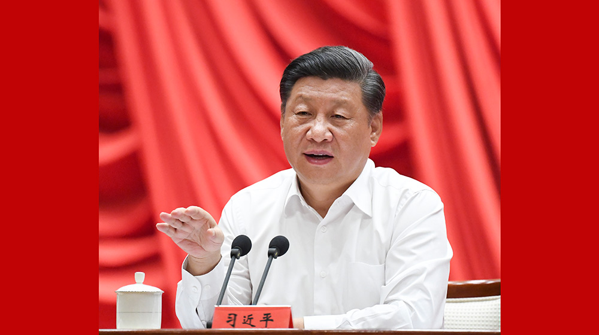

习近平在中央党校（国家行政学院）中青年干部培训班开班式上发表重要讲话强调
发扬斗争精神增强斗争本领
为实现“两个一百年”奋斗目标而顽强奋斗
王沪宁出席
新华社北京9月3日电 2019年秋季学期中央党校（国家行政学院）中青年干部培训班3日 上午在中央党校开班。中共中央总书记、国家主席、中央军委主席习近平在开班式上发表 重要讲话强调，广大干部特别是年轻干部要经受严格的思想淬炼、政治历练、实践锻炼， 发扬斗争精神，增强斗争本领，为实现“两个一百年”奋斗目标、实现中华民族伟大复兴的 中国梦而顽强奋斗。

习近平指出，我们共产党人的斗争，从来都是奔着矛盾问题、风险挑战去的。
当前和今后一个时期，我国发展进入各种风险挑战不断积累甚至集中显露的时
期，面临的重大斗争不会少，经济、政治、文化、社会、生态文明建设和国防
和军队建设、港澳台工作、外交工作、党的建设等方面都有，而且越来越复杂。
领导干部要有草摇叶响知鹿过、松风一起知虎来、一叶易色而知天下秋的见微
知著能力，对潜在的风险有科学预判，知道风险在哪里，表现形式是什么，发
展趋势会怎样，该斗争的就要斗争。
习近平强调，斗争是一门艺术，要善于斗
争。在各种重大斗争中，我们要坚持增强忧患意识和保持战略定力相统一、坚
持战略判断和战术决断相统一、坚持斗争过程和斗争实效相统一。领导干部要
守土有责、守土尽责，召之即来、来之能战、战之必胜。习近平指出，要注重
策略方法，讲求斗争艺术。要抓主要矛盾、抓矛盾的主要方面，坚持有理有利
有节，合理选择斗争方式、把握斗争火候，在原则问题上寸步不让，在策略问
题上灵活机动。要根据形势需要，把握时、度、效，及时调整斗争策略。要团
结一切可以团结的力量，调动一切积极因素，在斗争中争取团结，在斗争中谋
求合作，在斗争中争取共赢。习近平强调，斗争精神、斗争本领，不是与生俱
来的。领导干部要经受严格的思想淬炼、政治历练、实践锻炼，在复杂严峻的
斗争中经风雨、见世面、壮筋骨，真正锻造成为烈火真金。
要学懂弄通做实党
的创新理论，掌握马克思主义立场观点方法，夯实敢于斗争、善于斗争的思想
根基，理论上清醒，政治上才能坚定，斗争起来才有底气、才有力量。要坚持
在重大斗争中磨砺，越是困难大、矛盾多的地方，越是形势严峻、情况复杂的
时候，越能练胆魄、磨意志、长才干。领导干部要主动投身到各种斗争中去，
在大是大非面前敢于亮剑，在矛盾冲突面前敢于迎难而上，在危机困难面前敢
于挺身而出，在歪风邪气面前敢于坚决斗争。习近平指出，社会是在矛盾运动
中前进的，有矛盾就会有斗争。领导干部不论在哪个岗位、担任什么职务，都
要勇于担当、攻坚克难，既当指挥员、又当战斗员，培养和保持顽强的斗争精
神、坚韧的斗争意志、高超的斗争本领。我们在工作中遇到的斗争是多方面的，
改革发展稳定、内政外交国防、治党治国治军都需要发扬斗争精神、提高斗争
本领。全面从严治党、坚持马克思主义在意识形态领域的指导地位、全面深化
改革、推进供给侧结构性改革、推动高质量发展、消除金融领域隐患、保障和
改善民生、打赢脱贫攻坚战、治理生态环境、应对重大自然灾害、全面依法治
国、处理群体性事件、打击黑恶势力、维护国家安全，等等，都要敢于斗争、
善于斗争。领导干部要做敢于斗争、善于斗争的战士。
陈希主持开班式并讲话。
他表示，要把学习贯彻习近平新时代中国特色社会主义思想作为根本任务，作
为全部工作的主题主线，自觉主动学、及时跟进学、联系实际学、笃信笃行学，
增强“四个意识”，坚定“四个自信”，做到“两个维护”，锤炼忠诚干净担当的政
治品格，发扬斗争精神、提高斗争本领，把初心和使命落实到本职岗位上、一
言一行中，为实现“两个一百年”奋斗目标、实现中华民族伟大复兴的中国梦作
出应有贡献。丁薛祥、黄坤明出席开班式。
2019年秋季学期中央党校（国家行政学院）中青年干部培训班学员参加开班式，
中央有关部门负责同志列席开班式。